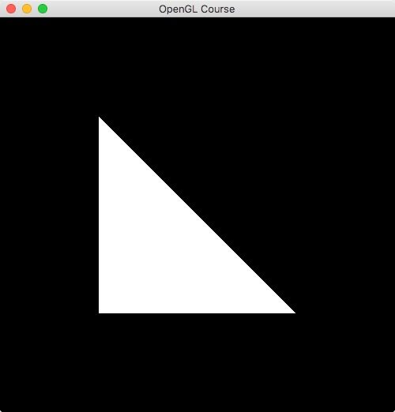
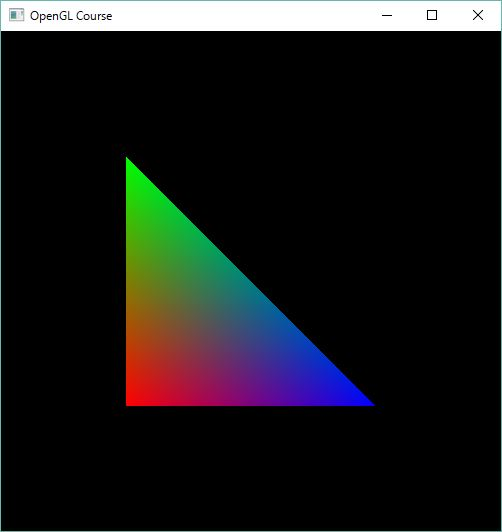
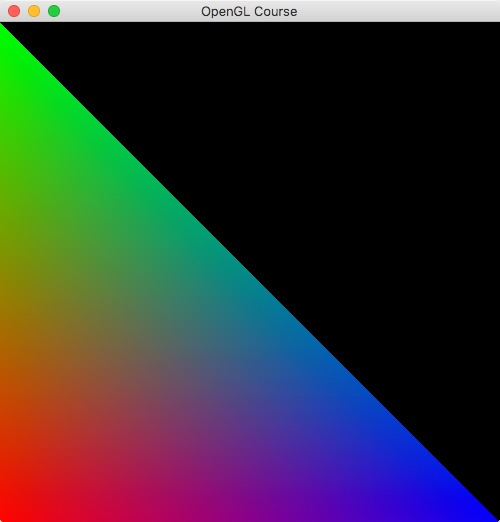
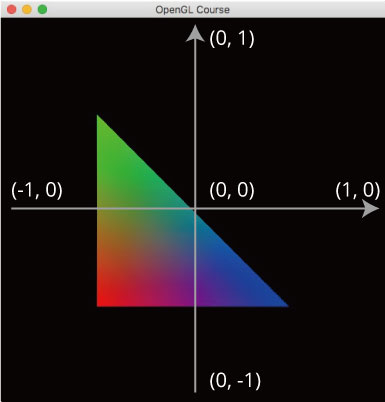

第2回 三角形を描く  ¶
¶
前回は、単に塗りつぶされた画面が表示されるだけのプログラムを紹介しました。 今回は、これを少し発展させて、三角形を表示させるプログラムを作りたいと思います。
三角形の座標指定¶
三角形の頂点座標は glVertex2f 関数で指定します。この関数は引数を3つ取り、
そのそれぞれがx座標、y座標に対応するものになっています。
頂点を指定するためには、指定前に glBegin 関数、指定後に glEnd 関数を呼びます。
このとき glBegin 関数は今から何を描画しようとしているのかを表す定数を引数に取ります。
これから描くのは三角形なので、 GL_TRIANGLES を指定します。
それでは、メインループの glClear 関数のあとに以下のようなコードを書いてみましょう。
1 2 3 4 5 | glBegin(GL_TRIANGLES);
glVertex2f(-0.5f, -0.5f);
glVertex2f(-0.5f, 0.5f);
glVertex2f(0.5f, -0.5f);
glEnd()
|
正しい位置にコードがかけていれば、次のような画面が表示されるはずです。この時、ビルドをやり直すのを忘れないようにしてください。
{kind=link}
三角形を描画するときには頂点の色を指定することもできます。この時に使う関数が glColor3f 関数です。
この関数は3つの引数を取り、それぞれが赤、緑、青の成分に対応しています。
色の指定は、頂点位置を glVertex2f で指定する直前のものが反映されます。
上のコードを次のように書き換えてみましょう。
1 2 3 4 5 6 7 8 | glBegin(GL_TRIANGLES);
glColor3f(1.0f, 0.0f, 0.0f); // 赤
glVertex2f(-0.5f, -0.5f);
glColor3f(0.0f, 1.0f, 0.0f); // 緑
glVertex2f(-0.5f, 0.5f);
glColor3f(0.0f, 0.0f, 1.0f); // 青
glVertex2f(0.5f, -0.5f);
glEnd();
|
すると次のような色の付いた三角形が表示されるはずです。
{kind=link}
さて、内容としては第2回はこれで終わりなのですが、2つほど、疑問が生じます。
- 画面上の座標系はどうなっているのか？ (どこが原点？値の範囲は？)
- なぜ描画される三角形の色がグラデーションになるのか？
以下では、このぞれぞれについて解説をしてみたいと思います。
OpenGLの座標系¶
先ほど三角形を描画するときに指定した座標は、 (-0.5, -0.5) , (-0.5, 0.5) , (0.5, -0.5) でした。
この時、 (-0.5, -0.5) は左下の赤色の頂点、 (-0.5, 0.5) は左上の緑色の頂点、
(0.5, -0.5) は右下の青色の頂点に対応しています。
ここから考えると、画面上の座標系がどうなっているか分かりそうです。もし、頂点の座標が、
等間隔で変わっていくと考えるならば、画面の左下が (-1, -1) になり、画面の右上が (1, 1) になりそうです。
では、実際に座標位置を変えて試してみましょう。上で作ったコードを以下のように書き換えます。
1 2 3 4 5 6 7 8 | glBegin(GL_TRIANGLES);
glColor3f(1.0f, 0.0f, 0.0f); // 赤
glVertex2f(-1.0f, -1.0f);
glColor3f(0.0f, 1.0f, 0.0f); // 緑
glVertex2f(-1.0f, 1.0f);
glColor3f(0.0f, 0.0f, 1.0f); // 青
glVertex2f(1.0f, -1.0f);
glEnd();
|
さっそく、描画結果を確認してみてください。おそらく、次のような画面が表示されるはずです。
{kind=link}
こちらの実験からも確認できる通り、OpenGLの画面における座標系は、以下の図のようになっています。
{kind=link}
では、この座標系を変更することができるのか？という疑問が当然生じてくるわけですが、これに関しては、 次回以降でお話できればと思っています。
三角形がグラデーションになる理由¶
さきほどのコードでは、三角形の各頂点に違う色が指定されていました。もちろん同じ色が指定されていれば、 その指定されている色で三角形全体を塗りつぶせば良さそうですが、違う色である場合には、 どのように内部を塗りつぶすのが正しいのでしょうか？
この問題を解決するために、OpenGLでは重心座標系という方法を使って、内部の色を決定しています。 三角形の各頂点 \(\textbf{x}_0\) , \(\textbf{x}_1\) , \(\textbf{x}_2\) とすると、三角形内部の位置 \(\textbf{x}\) は内分のパラメータ \(s\) および \(t\) を使って、
のように書けるのは、お分かりいただけるかと思います。OpenGLでは三角形内部の色を決定するときには、 この \(s, t\) を使用して、頂点の色 \(\mathbf{c}_0\) , \(\mathbf{c}_1\) , \(\mathbf{c}_2\) を同じように内分し、今描画したい位置の色 \(\mathbf{c}\) を決定します。
このような理由から、三角形の内部の色がグラデーションのように補間されて表示されていたというわけです。 この考え方は頂点に色以外の別の情報が与えられたときでも同様で、以後、OpenGLを使って 三次元空間にオブジェクトを描画するときに大切な考え方になってきます。
練習¶
- 三角形の頂点の位置を変えるとどうなるかを調べる
- 三角形の頂点の色を変えるとどうなるかを調べる
- 三角形の頂点の色を部分的にコメントアウトするとどうなるかを調べる